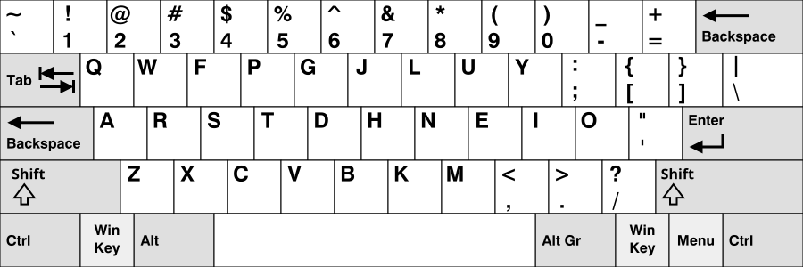

| Qwerty | Dvorak | Colemak | Workman |
|---|---|---|---|
 |
 |
 |
 |
Typing is an essential skill required in the modern world of computers and software engineering. It is a vital part of computer interaction that helps link a user to software. This article will help those who want to choose a suitable keyboard layout, especially those passionate about interacting with computers and gaining an advantage in this field.

If you are unfamiliar, look at the top row of your keyboard. You will see the letters Q, W, E, R, T, Y—hence the name QWERTY layout. It has long been considered the default and is most familiar to the average user. It has been used so widely that people rarely question why this specific layout exists. In an alternate scenario, we could have arranged letters alphabetically and become just as accustomed to it over time, without questioning its design.
The QWERTY layout has also been associated with inefficiencies and health concerns such as Repetitive Strain Injury (RSI) from prolonged typing. Originally designed in the 1870s to slow typists down and prevent typewriter jams, the layout forces fingers to travel unnecessarily between rows, even for the most common letters in the English language. This excessive movement can strain the hands and wrists over time. Despite this, the layout persists largely due to familiarity.
As time passed, the QWERTY layout became ubiquitous and remained dominant until a man named August Dvorak created a keyboard layout intended to address its shortcomings. Unfortunately, QWERTY was already widespread, so his design did not gain much traction despite being considered more efficient.
Computers eventually made their way into people's homes, and the same QWERTY layout carried over. As computers began replacing typewriters, people transferred their typing skills to word processors without difficulty.
Even though computer keyboards do not jam like typewriters, QWERTY remained the standard. However, over time, people began recognizing its limitations and started seeking more efficient alternatives.
There are many alternative layouts available that aim to improve upon QWERTY’s inefficiency. Many of them offer notable advantages in different ways. Some of them are:

The aforementioned August Dvorak created his own layout, which he named after himself. A major advantage is that all vowels are placed on the home row for the left hand. In English typing, this creates an alternating pattern, with most consonants on the right hand.
A major downside of Dvorak is that it does not allow easy use of Ctrl + ZXCV shortcuts with just the left hand. Some convenient shortcuts available in QWERTY are harder to use because they require both hands.

Colemak is a newer layout created in 2006 by Shai Coleman. It was designed to be less of a radical change for users switching from QWERTY compared to Dvorak. However, its support in major operating systems came later, and it was only introduced natively to Windows PCs in Windows 11 version 24H2. Before that, users had to rely on third-party software or custom input settings.
Another practical advantage of Colemak is its preservation of the ZXCV key cluster in their original positions, allowing commonly used shortcuts such as copy, paste, cut, and undo to remain accessible without relearning or changes in hand usage. In addition, the common practice of remapping the Caps Lock key to function as a secondary Backspace key places a high-frequency function in an ergonomically optimal position. Since Caps Lock is rarely required in regular typing, this modification improves efficiency and reduces unnecessary finger movement.

Colemak-DH is a refinement of the standard Colemak layout that improves ergonomics by reducing lateral finger movement on the home row. It repositions certain high-frequency keys to promote more natural vertical motion and better use of stronger fingers, resulting in increased comfort during extended typing.
These adjustments slightly modify the original Colemak arrangement, including some commonly used key clusters. As a result, users may need to adapt their muscle memory, though the layout still remains largely similar in structure and design.

Workman is an alternative keyboard layout designed to reduce lateral finger movement and improve workload distribution across fingers. It shares some structural similarities with Colemak, particularly in its home row design, while aiming to minimize horizontal strain.
However, its changes to key positions can affect shortcut accessibility and require adaptation. Some analyses also suggest less efficient finger utilization compared to layouts like Colemak-DH, limiting its wider adoption.
Each keyboard layout presents its own set of advantages and disadvantages, making the choice largely dependent on the user’s priorities. QWERTY offers unmatched familiarity and compatibility, while alternatives such as Dvorak, Colemak, Colemak-DH, and Workman aim to improve typing efficiency, reduce finger movement, and enhance ergonomic comfort.
The relative “upper hand” of a layout is determined by how well it aligns with a user’s needs—whether that be minimal learning curve, optimized finger travel, balanced hand usage, or shortcut accessibility. As a result, no single layout is universally superior; instead, each is suited for different purposes and user preferences, particularly in terms of comfort and long-term ergonomics.
Finger movement benchmarking evaluates how much distance fingers travel while typing a standardized passage. QWERTY typically results in higher finger travel due to its non-optimized key placement. In contrast, layouts such as Dvorak, Colemak, and Workman are designed to reduce unnecessary movement by placing frequently used keys closer to the home row and distributing workload more efficiently.
This is a paragraph for a standardized passage from Alice in Wonderland. It provides a consistent basis for comparing the performance of different keyboard layouts under identical conditions.
Alice was beginning to get very tired of sitting by her sister on the bank, and of having nothing to do. Once or twice she had peeped into the book her sister was reading, but it had no pictures or conversations in it, and what is the use of a book without pictures or conversations?
Its results are shown below:
| Qwerty | Dvorak | Colemak | Workman |
|---|---|---|---|
|
|
|
|
The analysis of alternative keyboard layout demonstrates that QWERTY, whicle universally familiar, is not the most ergonomically efficient. Benchmarking data consistently shows that layouts such as Colemak, Dvorak and workman reduce total finger travel distance, thereby lowering the risk of RSI over extended typing sessions.
Ultimately, no single layout is objectively superior across all criteria. The optimal choice depends on individual priorities, whether that is shortcut accessibility, ease of transition or long term ergonomic comfort, making layout selection depend entirely on the user's preference.